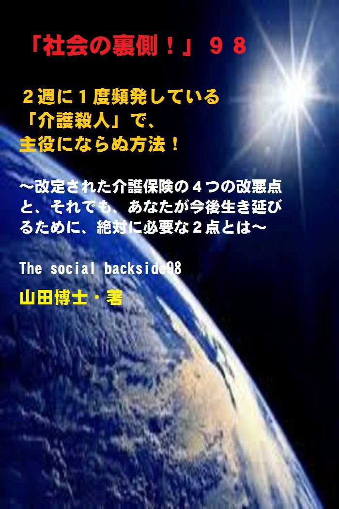

| 「社会の裏側！」９８......２週に１度頻発している「介護殺人」で、主役にならぬ方法！: 改定された介護保険の４つの改悪点と、それでも、あなたが今後生き延びるために、絶対に必要な２点とは | |
| 山田博士 | |
| kominitesyuppankai (2018) | |

■「社会の裏側！」９８
２週に１度頻発している「介護殺人」で、主役にならぬ方法！
～改定された介護保険の４つの改悪点と、それでも、あなたが今後生き延びるために、絶対に必要な２点とは～
The social backside98
山田博士・著
★本書の著作権について
皆さんにはまったく関係ないことだと思いますが、複写、転送、抜粋、転載など、著作権侵害にあたる行為は絶対になさらないで下さい。本書の著作権は、山田博士にあります。今後、皆さんのお役に立ちたい活動が出来なくなりますので、その点、ぜひよろしくお願いします。ささささ、それでは、本書をどうぞ、ごゆっくりご覧下さい。
★概要
あるテレビ番組がありました。
タイトルは、「ＮＨＫスペシャル"介護殺人"当事者たちの告白」というものでしたが、２０１６年の１０月９日にも、再放映されたようですね。
これは、日本中で介護を担（にな）う人の数が５５７万人にも達して、「介護問題」は、もうけっして他人事じゃなくなった現状に鑑（かんが）みて、企画されたもののようでした。
そして、「介護殺人」という悲惨な体験をした「加害者」たちの声を、鋭く聞いた内容だったのです。
いやあ、この内容には、ぼくも驚きました。
でも、この取材は大変だったと思いますね。
だって、多くの「加害者」は、そんな取材にはとても答えられなかったはずでしょうし......。
そのときのＮＨＫ報道によりますと、２０１０年から２０１６年までの間に、日本全国で「介護殺人」と思われる事件は、１３８件も起きております。
わずか......６年間に、です。
つまり、１年間で約２３件。
１か月では約２件。
と言うことは、１週間おきに１件......ということになりますか。
もの凄い頻度（ひんど）です。
★★★
まさに、いまぼくたちの国は、「介護受難時代」に突入したと言っていいのかもしれません。
政府は、「カネがない」といつも叫びながら、在宅介護を国民に押しつけてきたわけですが、そのツケがいま、各地で噴出しているわけですね。
けっして政府に「カネがない」わけじゃなく、自分たちのためにはもの凄い無駄なカネを使っておきながら......国民一人ひとりを、「介護受難時代」にする。
埼玉県の秩父（ちちぶ）地方のある町で、２０１６年の２月、警察に１本の電話が入ったのです。
「妻を刺した......」
８３歳の男性が７７歳の妻を殺し、みずからも傷だらけになっていたと言います。
しかし、彼は、一人部屋の留置場から一歩も外に出ず、無言で押し通し、水以外の食事は口にしないで、９日後に病院で死亡しました。
一人、寂しく......。
なぜ、彼は、ここまで追い込まれたのか。
★★★
「認知症の妻の介護に疲れ、無理心中を図った」と、当初話していた彼なのですが、取材で見えてきたのは、理想とも思えるような第２の人生を送っていた夫婦の姿だったのです。
端（はた）からは、何も分からないものです。
彼は、東京のテレビ局を５０代で早期退職しました。
そして、妻との終（つい）の棲家（すみか）の場として選んだのが、今回の土地だったのです。
自然豊かな秩父地方だったわけですね。
ところが、事態は急変します。
まあ、そのあたりは本書でご覧いただくとして、誰にでもおこりうるのが、この「介護殺人事件」なんですね。
いかに幸せな日々が続いていたとしても、ある日、突然、起こる。
★★★
京都府で起きた「認知症母殺人事件」というのもありました。
認知症の母親（当時８６歳）を介護していた長男（当時５４歳）が、京都市伏見区の桂川（かつらがわ）の遊歩道で、母親の首を絞めて殺害した事件なんですね。
その直後に自らも命を絶とうとしたのですが、そのときは未遂（みすい）に終わりました。
でも、逮捕されて有罪判決を受けたその長男が、２０１４年８月、琵琶湖で遺体で見つかったと......。
こういう事件は、けっして特別なものじゃないんです。
多くのかたは、まさか自分が「主人公になる」とは思っていなかったわけですね。
このように、「介護する側の辛（つら）さ」は、言葉には表せません。
それなのに、いまの行政には、「介護する人」たちを支援する視点が、まったく欠けております。
★★★
介護される人のほうばかり見ていますが、在宅介護を進めながら、こうした「介護する人」への救済策については、どこにもないわけですね。
だから「介護離職」をせざるを得ない。
そして、経済的に困窮する。
生活保護の申請をしても断られる。
その後の対策がどこにもない......わけですね。
いったい、どうすればいいわけです？
じつは、２０１５年に行われた介護保険の「改定」は、最悪でした。
そうです。
ぼくに言わせれば、史上最悪......とでも言えるような「改定」でした。
いやあ、ここまで政府は、高齢者とその介護者をないがしろにするものなのかなあ......と、口をアングリと大きく開けて呆（あき）れかえったものです。
そのときの「改定」は、何が問題だったのか、そのあたりも、本書では述べました。
驚くような「改悪内容」を、ぜひご覧下さい。
★★★
ある介護福祉士がおっしゃるには、自分の働いているグループホームの利用者の半数以上が、「要介護２」だとか。
今回の「改定」では、つまり、人数の多い「要介護２」の人たちを切り捨てて、おカネを浮かそうという政府の魂胆（こんたん）なわけですね。
このやりかた、きわめて卑怯（ひぎょう）じゃありませんか。
そして、２０１８年にも、「介護保険制度」が変更しました。
今後も、こうした「改定」が続くことでしょう。
でも、ぼくたちは、いまの社会が良くなるまでジッと待つわけにはいきません。
その間に、どんどん人生は進んでしまいますからね。
★★★
それに、はたして社会が良くなる日が本当に来るのかどうか。
人類の歴史を少し振り返りますと、悲しいかな、国民みんなにとって素晴らしい国ができた例は、過去に「１国でさえ」ないわけですね。
人間とは、ひょっとして、こうして闘いながら生きて行くのかもしれません。
だから、まずぼくたちで可能なことを、今日からぜひ実践したい。
そのために、ぼくたちに必要なことが二つあります。
まずこれさえ可能であるなら、社会がどうなっても、生きられます。
そして、家族を守ることが可能です。
その二つとは何か。
本書を、どうぞ、ご覧下さい。
★目次
★（第１章）
さだまさしさんの歌「秋桜（コスモス）」を聴いていて、もういけません。視界が突然曇ってきました。親子の絆（きづな）とは、本当に強いものなんですね。ふだん、喧嘩ばかりしていても、突然、相手を思いやる。それなのにいま、家族の間で......。
★（第２章）
礼儀正しく真面目な人ほど、他人に相談もせず、自分一人で責任を負っている人が多いような気がします。人には迷惑をかけてはいけない......そう思っている人は、「介護」という自分だけではどうにもならない現実を前にして、押しつぶされるのかもしれません......
★（第３章）
京都府で起きた「認知症母殺人事件」は、いまの「介護殺人事件」の典型的なものです。でも、ケアマネ（ケアマネジャー）の、なんと５０%以上の人たちが、こうした在宅介護の介護疲れによる「殺人事件」を危惧しているわけですね......
★（第４章）
２０１５年に行われた介護保険の「改定」は、本当に最悪のものでしたが、その問題点を４つ挙げておきます。これこそが、いまの「介護殺人事件」へとつながっているのでしょうね......
★（第５章）
いま、ぼくたちが「介護殺人事件」を防ぐためにできることは、何だろう。それには大きく分けて二つあります。寝たきりや認知症になるきっかけは、じつは転倒なんですね。だけどそれを防ぐには......
★「社会の裏側！」シリーズの既刊本案内
★プロフィール
（最初に、恥ずかしながら、ぼくの紹介を簡単に述べておきます）
やまだ・ひろし。
１９４７年、福井県小浜（おばま）市生まれ。
食生態学者。元大学名誉教授。日本危機管理学会会員。
山田博士いのち研究所主宰。
ベトナム戦争の終わったちょうどその年１９７５年に、マンガストーリィと商品の実名で食べものや環境を取り上げた小冊子「暮しの赤信号」を発行する。実名で取り上げたため、社会に衝撃を与えた。各号１０万部単位で読まれ、隠れたベストセラーなどと、新聞などで何度も報道される。
同じ年、偶然にも有吉佐和子さんの「複合汚染」が発表され、この小冊子はその動きも受けて多くの学校の副読本としても活用された。
文化放送の「なっちゃこワイド」や、ＮＨＫ海外放送「ある日本人」でお話しをしたり、ギター弾き語り公演や、各自治体や学校などへの講演なども続けている。
現在は、メルマガ「暮しの赤信号」（「短縮版」と「完全版」の２種）を発行し、企業名や商品名なども公表して、世界中のかたに喜ばれている。
その読者層は、医師や看護師、栄養士、教師、会社経営者、自治体など、国の内外を問わず、多くの読者たちから毎日のように便りが届いている。年齢層も、１０代からかなりの高齢のかたまで、さまざまだ。
このメルマガは、まぐまぐ！を始め３つのスタンドの合計で、７千部発行しているが、もしご関心のあるかたは、ご覧いただくと嬉しい。毎日、早朝５時に届けられる（日曜は除く）。その時刻を楽しみにされている読者も多いとか。
先述したように、メルマガ「暮しの赤信号」には２種類あり、「短縮版」のほうは無料。「完全版」のほうは、山田の思いが１００％掲載されており、社会を見るのに、毎回大いに参考になるだろう。そのほかにもさまざまな特典がある。
「短縮版」については、ご希望のかたには、お送りしてもいい。
■毎月第３土曜日に、東京の恵比寿でお茶飲み会「博々亭（ひろびろてい）」を開催。遠路から毎回読者が駆けつけている。参加条件はメルマガ読者に限定。参加費用は無料だ（８月と１２月はお休み）。
■著書には、下記のようなものがある。
『脱コンビニ食！』（平凡社新書）
『危険な食品』（宝島社新書）
『その食品はホンモノですか？』（三才ブックス）
『ひとり月１万円食費で幸せ生活』（ＷＡＶＥ出版）
『最新 危ないコンビニ食』（現代書館）
『あぶないコンビニ食』（三一新書）
『続 あぶないコンビニ食』（同）
『外食店健康度ランキング』（同）
『山田博士の暮しの赤信号』第１巻～第５巻（亜紀書房）
『暮しの赤信号』小冊子＆ＣＤ－ＲＯＭ版全２３巻
『月１万少々の食費で、ザクザクと健康を稼ぐぼくの方法』
『いのち運転"即実践"マニュアル』各話
『社会の裏側！』各巻（アマゾン発行の電子書籍）
『セーラー服と警察犬』（小説）各巻
『実話・食卓の事件簿』各巻......など。
■山田のホームページ→ http://yamadainochi.com/
■短縮版メルマガ「暮しの赤信号」専用ブログ
→ https://inochimamorutameni.hateblo.jp/
■短縮版メルマガ「暮しの赤信号」登録（無料）
→ http://goo.gl/AFx95J
★はじめに......
こんにちは。
山田博士（やまだ・ひろし）です。
本書をご覧いただき、嬉しく思っております。
この内容をご覧いただくことで、少しでもあなたが「社会の裏側！」の流れにお気づきになり、そしてたとえ１ミリでもいい、即、行動されることを願っております。
ただ読むだけでは、誰でもできます。
それでは、あなたの身の回りの状況は石のように動きません。
本書をご覧になって、これは......と思うことがあれば、即行動なさって下さい。
お願いします。
その小さな行動の積み重ねこそが、あなたの明日を、１２色のバラ色で輝かせることになると信じております。
なお、この「社会の裏側！」は、今後もシリーズとして発刊して行くつもりです。
もしご関心があれば、「社会の裏側！」という名前で、アマゾンで検索してお調べ下さい。
さまざまな問題の社会の裏側！を詳しく、しかも楽しく述べております。
ぼくの名前で検索されても、見つかるのではないかと思います。
もし、「ＰＤＦ版」でご希望の場合は、ぼくの事務局まで遠慮なくお問い合わせ下さい。事務局→ http://goo.gl/t12Yx
ささささ、能書きはそこまでにします。
どうぞ、笑顔で、頁をお繰（く）り下さい。
お楽しみに！
★（第１章）
さだまさしさんの歌「秋桜（コスモス）」を聴いていて、もういけません。視界が突然曇ってきました。親子の絆（きづな）とは、本当に強いものなんですね。ふだん、喧嘩ばかりしていても、突然、相手を思いやる。それなのにいま、家族の間で......。
昨日の東京地方。
朝のうちはシトシトと小雨が降っていたのですが、午後になるや、突然、まるで舞台が変わったかのように、一気に青空が広がり、気持ちのいい１日になりました。
道端で揺れている秋桜（コスモス）嬢たちが、可愛くて......。
彼女たちも、まるでシャワーを浴びたかのように、顔をピカピカにさせて、通り過ぎるぼくに笑顔を向けてくれました。
たまには、こういう秋の日も、清々（すがすが）しくていいモンです。
こうした１日だと、社会のさまざまな深刻な問題を、うっかりと忘れてしまいそうになります(笑)。
......ところで、コスモスと言えば、同じ名前の歌、皆さん、ご存じでした？
ほら、さだまさしさんが歌っていた、あの歌。
ぼくは、昔から、この歌を聴くと、もういけません。
不覚にも、突然、視界が曇ってくるのです。
これだけいい天気なのに、視界が......。
鬼の目にも......なんて言わないでください。
この歌を知らないかたは、いつものように、下記で、この歌詞をちょっとご覧になってくださいな。
曲も載せておきました。
最初は、一部だけにしようかと思いましたが、ええい、思い切って、全部載せてしまおう......ということにしました。
そのほうが、きっと、あなたもぼくと同じように、視界が......。
「秋桜（コスモス）」
さだまさし作詞・作曲
１）淡紅(うすべに)の 秋桜(コスモス)が
秋の日の何気ない 陽溜(ひだま)りに揺れている
この頃 涙脆(なみだもろ)くなった母が
庭先でひとつ 咳(せき)をする
縁側で アルバムを開いては
私の幼い日の 思い出を
何度も同じ話 くりかえす
独り言みたいに 小さな声で
こんな小春日和（こはるびより）の 穏やかな日は
あなたの優しさが 浸みて来る
明日(あした)嫁（とつ）ぐ 私に
苦労はしても 笑い話に時が変えるよ
心配いらないと笑った
２）あれこれと 思い出をたどったら
いつの日も ひとりではなかったと
今更ながら 我儘(わがまま)な私に
唇 かんでいます
明日への 荷造りに手を借りて
しばらくは 楽し気にいたけれど
突然涙こぼし 元気でと
何度も何度も くりかえす母
ありがとうの言葉を かみしめながら
生きてみます 私なりに
こんな小春日和の
穏やかな日は もう少しあなたの
子供でいさせてください
YouTube→ https://www.youtube.com/watch?v=hslKwT7yzIo
（すぐに音が出ますので、当初の音量を絞ってお聞き下さい。またすぐに出ない場合は、再生や再起動をしてみて下さい）
上記の２番目......。
明日への 荷造りに手を借りて
しばらくは 楽し気にいたけれど
突然涙こぼし 元気でと
何度も何度も くりかえす母
この歌を聴いていて、ここで、もういけません。
思考がストップしてしまいます。
目の前が見えなくなります。
親子の絆（きづな）とは、本当に強いものなんですね。
ふだん、喧嘩ばかりしていても、突然、相手を思いやる。
他人にはけっして分からない心の動き。
ぼくも、子どものころや若いころの親との数々の思い出を、いつも胸の奥にしっかりとしまいながら、今後も生きて行きたい。
そう思っています。
何ごともなければ......。
そう、この何ごともなければ......という部分が、今回、この原稿を書いたキッカケなんですね。
多くのかたも、もちろん、自分の親や配偶者との楽しい過去を、そのまま記憶の中にしまい込み、余生を生きて行きたいと思っていらっしゃるはず。
そうですよね。
誰が好んで、自分にとって一番大切な●●に手を出しますか（●●は下記の設問を）。
だから、もしそういう行為が存在するとすれば、それは個人の問題というより、社会全体の歪（ゆが）みだと思うしかないわけですね。
しかし、このところ、家族間での悲惨な事件が、日本全国で続出しております。
いったい、日本という国はどうなってしまったのか。
どこへ行ってしまったのか。
ぜひ、いま一度、ごいっしょに、立ち止まって考えてみましょうよ。
そうそう、ＮＨＫで、「加害者」を取材したある番組がありました。
その番組とは......。
★（第２章）
礼儀正しく真面目な人ほど、他人に相談もせず、自分一人で責任を負っている人が多いような気がします。人には迷惑をかけてはいけない......そう思っている人は、「介護」という自分だけではどうにもならない現実を前にして、押しつぶされるのかもしれません......
その番組は、２０１６年７月１２日に放映されたもの。
タイトルは、「ＮＨＫスペシャル"介護殺人"当事者たちの告白」というものでした。
１０月９日（２０１６年）に再放映もされたようですね。
これは、日本中で介護を担（にな）う人の数が５５７万人にも達して、「介護問題」は、もうけっして他人事じゃなくなった現状に鑑（かんが）みて、企画されたもののようでした。
そして、「介護殺人」という悲惨な体験をした「加害者」たちの声を、鋭く聞いた内容だったのです。
いやあ、この内容には、ぼくも驚きました。
でも、この取材は大変だったと思いますね。
だって、多くの「加害者」は、そんな取材にはとても答えられなかったはずでしょうし......。
その稀少（きしょう）な内容が、ここでは放映されております。
この中には、刑務所で服役中だということもあり、わざわざ刑務所にまで面会に行って取材したものもありました。
その「加害者」にとっては、自分の苦しい人生は、いままさに現在進行中だったわけですね。
こうした取材内容を見ますと、事態は、極めて深刻なところにまで来ています。
つい数年前、多くの人たちは、「そのうちきっと介護の現場でこういう問題も起こるのだろうな......」なんて、漠然と他人事のように考えていたことが、今日、すでに現実に起こっているわけですね。
とうとう日本の各地で、こうした悲惨な事件が頻発（ひんぱつ）するようになりました。
今後、ぼくたちの身近で、どんどん、起こってくることでしょう。
そして、これは何度も言いますが、けっして隣人の問題じゃなく、ぼくたち自身の問題なわけですね。
そのときのＮＨＫ報道によりますと、２０１０年から２０１６年までの間に、日本全国で「介護殺人」と思われる事件は、１３８件も起きております。
わずか......６年間に、です。
つまり、１年間で約２３件。
１か月では約２件。
と言うことは、１週間おきに１件......ということになりますか。
もの凄い頻度（ひんど）です。
まさに、いまぼくたちの国は、「介護受難時代」に突入したと言っていいのかもしれません。
そう、昔はバラ色に見えた２１世紀になって、ぼくたちの社会は「介護受難時代」になってしまったわけですね......。
政府は、「カネがない」といつも叫びながら、在宅介護を国民に押しつけてきたわけですが、そのツケがいま、各地で噴出しているわけです。
けっして政府に「カネがない」わけじゃなく、自分たちのためにはもの凄い無駄なカネを使っておきながら......国民一人ひとりを、「介護受難時代」にする。
ぼくなど、まったく政府のしようとすることが分かりません。
「国民を幸せにすること」こそ、政府にとって大きな喜びだと思うのですが......。
あ、そうか。
国民を苛（いじ）める趣味が、いまの政府の面々にはあるのか(笑)。それなら了解です。
でも、......ナントも嫌（いや）な趣味ですよね。
その放映を見て思ったことは、真面目で、どんなことにも熱心で、他人のせいにせず、心優しい人ほど、「加害者」になっているということ。
まるでぼくみたい(笑)。
いや、多くの日本人は、そういうかたが多いのじゃありませんか。すべて自分がかぶり、他人のせいにはしない。
そういう人は多いと思います。
あなたもそうですよね。
真面目で、けっして他人のせいにせず、心優しい人......。
あれ......ど、どこへ......（いつものことながら、皆さん、素速いんですよね。笑）。
まあ、それはともかく、今回の放映の中で一つだけ例を挙げますと、ある「加害者」は、認知症の妻を殺害し、みずからも警察での食事を拒（こば）んで、みずから......死を選びました。
埼玉県の秩父（ちちぶ）地方のある町で、２０１６年の２月、警察に１本の電話が入ったのです。
「妻を刺した......」
８３歳の男性が７７歳の妻を殺し、みずからも傷だらけになっていたと言います。
しかし、一人部屋の留置場から一歩も外に出ず、無言で押し通し、水以外の食事は口にしないで、９日後に病院で死亡しました。
一人、寂しく......。
なぜ、彼は、ここまで追い込まれたのか。
「認知症の妻の介護に疲れ、無理心中を図った」と、当初話していた彼なのですが、取材で見えてきたのは、理想とも思えるような第２の人生を送っていた夫婦の姿だったのです。
端（はた）からは、何も分からないものです。
彼は、東京のテレビ局を５０代で早期退職しました。
そして、妻との終（つい）の棲家（すみか）の場として選んだのが、今回の土地だったのです。
自然豊かな秩父地方だったわけですね。
彼は、地域の行事にも積極的に参加し、近くに借りた畑では野菜を栽培して近所のかたにもお裾分（すそわ）けしていたようです。
けっして孤独にならず、地域にも溶け込もうとしていました。
この町を選んだ理由は、妻が絵画（かいが）を趣味にしていたからと言います。
妻思いなんですね。
そのため、妻が「秩父の絵を描きたい」と言っていたものだから、ここに引っ越してきたわけでしたが、周囲の目では羨（うらや）むほどの夫婦だったと言います。
ところが、事態は急変します。
彼が７０歳を超えたころ、体調が不調になり、ガンが進行していたそうなんですね。
そして同時期に、妻が認知症になり、介護が必要に......。
彼は、周囲の人に、「私がいなくなれば、妻は１日も生きて行けない......」と、いつもこぼしていたようです。
ところが、問題なのは、「介護がつらい......」とは周囲の人にはひと言も言っていないわけですね。
他人には、絶対に迷惑をかけたくない......。
友人の勧（すす）めで、町の社会福祉協議会に相談もしたようですが、結局公的なサービスを受けたのは１回だけ。
それも「事件」の直前、自分が入院するときに頼んだ、妻への配食サービスだけでした。
すべて妻のためだったのです。
彼は、「人に迷惑をかけてはいけない。子どもにも迷惑をかけてはいけない」......と、近所の人にいつも話していたそうです。
「礼儀正しく真面目な人」という人柄の裏で、彼は、強すぎるほどの責任感を持っていたのでしょうね。
そして、それに押しつぶされた......。
もう少し、力を抜いてくれていたらと、いまとなっては思わざるを得ません。
その放映とは別に、ほかにも、衝撃的な事件がありました。
それは......。
★（第３章）
京都府で起きた「認知症母殺人事件」は、いまの「介護殺人事件」の典型的なものです。でも、ケアマネ（ケアマネジャー）の、なんと５０%以上の人たちが、こうした在宅介護の介護疲れによる「殺人事件」を危惧しているわけですね......
もう一つ、社会に大きな衝撃を与えた「介護殺人事件」があります。
少し前のことになりますが、現在も、同様の事件が頻発（ひんぱつ）しています。
そういう意味では、その「走り」......と言っていいのかもしれません。
それは、２００６年２月のこと。
京都府で起きた「認知症母殺人事件」のことです。
認知症の母親（当時８６歳）を介護していた長男（当時５４歳）が、京都市伏見区の桂川（かつらがわ）の遊歩道で、母親の首を絞めて殺害した事件なんですね。
その直後に自らも命を絶とうとしたのですが、そのときは未遂（みすい）に終わりました。
でも、逮捕されて有罪判決を受けたその長男が、２０１４年８月、琵琶湖で遺体で見つかったと......。
心中を考えるまで母子が追いつめられたのは、長男の「介護離職」が生んだ......「経済的な困窮（こんきゅう）」が原因だったのです。
その彼は、母が好きだったわけですね。
そのことは、この事件後に語ったという、「母の命を奪ったけれど、もう一度母の子に生まれたい」......という言葉からも、この親子の絆の強さが垣間見（かいま）られるようです。
ぼくなど、彼のこの言葉を聞いて、もう言葉がありません。
彼の心境を思うと、もう、もう、もう......。
役所に、生活保護の受給を相談したものの、「まだ働ける」ことを理由に断られたとも報じられていますが、行政がもっと細かく調査をしていれば、この事件は防げたのかもしれません。
でも、その自治体だけの問題じゃないでしょう。
これは日本の介護についての根本的な姿勢の問題なんですね。
その基本が変化しなければ、今後も同様の事件が続くはずです。
２００６年７月の判決のとき、彼には猶予（ゆうよ）刑がおり、その「温情判決」に、法廷には涙が溢（あふ）れたと言います。
みんな、分かっているんです。
誰が悪くて、何がまともなのか。
彼にも、子ども時代、母との良き思い出があったことでしょう。
先述した歌の「コスモス」の歌詞にあったように、
こんな小春日和の
穏やかな日は
もう少しあなたの 子供でいさせてください
......というような日常が、親子の間には、あったはずです。
その親子の絆をみずからの手で断ち切らなくてはならない。
これほど、惨（むご）いことが、世の中にあるでしょうか。
ケアマネ（ケアマネジャー）の、なんと５０%以上の人たちが、こうした在宅介護の介護疲れによる「殺人事件」を危惧しているという現実もあります（出所：「毎日新聞」２０１６年２月２８日）。
いわば、起こるべくして起こった事件なんですね。
現場の人たち自身が、この「介護殺人事件」の頻発を予言していたわけですから。
だけど、それら現場の声を無視し続ける、政府や役人たち。
ぼくも長男です。
そのため、いま述べた彼のように、同じ「息子の立場」で考えれば、彼の心境が、ズッシリと胸に突き刺さります。
いったい、いつまでこういうことが続くのか。
なぜ、変わらないのか。
じつは、以前にも、この「介護殺人事件」について、この「時事呆談」で述べたことがあります。
そのとき、「加害者」家族の５０％は、ふだんから不眠や鬱（うつ）状態だと述べました。
介護する側の辛（つら）さは、言葉には表せません。
それなのに、いまの行政には、「介護する人」たちを支援する視点が、まったく欠けております。
介護される人のほうばかり見ていますが、在宅介護を進めながら、こうした「介護する人」への救済策については、どこにもないわけですね。
だから「介護離職」をせざるを得ない。
そして、経済的に困窮する。
生活保護の申請をしても断られる。
その後の対策がどこにもない......わけですね。
いったい、どうすればいいわけです？
こんなことって、ありますか。
あなたがその立場になれば、どうします？
介護とは、誰でも、突然その環境に放り込まれるわけですよ！
なにしろ、現在、日本国内では、６５歳以上の４人に１人が認知症（予備軍含む）......となっています。
そして、その数字は凄（すさ）まじい勢いで増加しているわけですね。
こういう中では、せめて公的な支援が少しでもあればと、思ってしまうのですが、じつは、それどころか、介護保険がもう......。
★（第４章）
２０１５年に行われた介護保険の「改定」は、本当に最悪のもので
したが、その問題点を４つ挙げておきます。これこそが、いまの
「介護殺人事件」へとつながっているのでしょうね......
じつは、２０１５年に行われた介護保険の「改定」は、最悪でした。
そうです。
ぼくに言わせれば、史上最悪......とでも言えるような「改定」でした。
いやあ、ここまで政府は、高齢者とその介護者をないがしろにするものなのかなあ......と、口をアングリと大きく開けて呆（あき）れかえったものです。
そのときの「改定」は、何が問題だったのか、ザックリ言いますと、下記のとおりです。
よく覚えておいてください。
１．「要支援１」や「要支援２」の訪問介護や通所介護を、保険から外して、自治体事業に移す。
２．年金収入が２８０万円以上の人へは、２割負担を導入する。
３．特養ホームへの入所を、「要介護３」以上に限定する。
４．施設入所の低所得者への食費や部屋代の補助要件を、一層厳（きび）しくする。
......ということでした。
この文言の中のどこに、高齢者への優しい「配慮」がありますか（笑）。ここにあるのは、高齢者の配慮じゃなく「排除」があるだけじゃありませんか。
違いますか。
どうして、ここまで高齢者を苛（いじ）めるわけです？
いまの高齢者の皆さんたちは、あれほどの廃墟にまでなった戦後の日本を、ここまで立ち直らしてきた大の功労者じゃござんせんか（しまった。言い方がちょっと変わってしもた......）。
そういう高齢者への費用を削って、役人たちの天下りによる高給な人件費などはそのままにする。
もっともっと、無駄な費用を削る場所があるじゃありませんか。
本当に不思議です。
今回のような「改定」の結果、どうなるか。
たとえば、ある男性の例を見ますと、「要介護５」の妻が特養ホームに入所しているということですが、その６０代の男性にとっては、なんと今後、月に７．３万円もの負担の増加になるわけですね。
いまの年金だけでは月に１万円～２万円ほども不足するため、仕方なく、この施設を退所させると言います。
そして、「在宅介護」に切りかえる」とか。
今後の見通しはまったく立たないと言います。
きわめて深刻ですよね。
つまり、今度の「改定」では、こうした人たちが施設から締め出されることになるわけです。
また、上述しましたように、「特養ホーム」入所の条件が、「要介護３」以上に限定されました。
そのため、現在「要介護２」である夫の親を「在宅介護」しているある６０代の女性は、悲鳴を挙げています。
これ以上、夫の親を在宅で介護することになると、自分の体が持たなくなる......と。
それはそうでしょう。
ある介護福祉士がおっしゃるには、自分の働いているグループホームの利用者の半数以上が、「要介護２」だとか。
つまり、人数の多い「要介護２」の人たちを切り捨てて、おカネを浮かそうという政府の魂胆（こんたん）なわけですね。
このやりかた、きわめて卑怯（ひぎょう）じゃありませんか。
このやりかた、きわめて卑怯（ひぎょう）じゃありませんか（二度、言います）。
消費税を設けるとき、こうした福祉問題を解決するための財源に使うのだ......なんて言っていたのは誰でしたか。
その舌の根も乾かぬうちに、平気で弱者をバッサリと切り捨ててしまう。
これじゃ、政府は詐欺（さぎ）を働いているじゃないかと指を指されても、仕方ないのじゃありませんか。
え？
アベ君（これを執筆している現在、首相である安倍首相のこと）。
いかがです？
こうした介護保険の「改定」こそ、いまここで述べている「介護殺人事件」へ国民を向かわせる大きな原因だったわけなんですね。
いったい議員たちは、「なんのために」そして「誰のために」、法律を作っているのでしょう。
ぼくがもし議員だったら、それらの法律を通そうとするほかの議員たちの両足にしがみついて、断念させるのだけどなあ。
え？
蹴飛（けと）ばされる？
それも、嫌だしなあ、痛いし......(軟弱なぼくです。笑)。
現在、３年ごとに、この介護保険が「改定」されています。
そして、２０１８年にも、「介護保険制度」が変更しました。
今後も、こうした「改定」が続くことでしょう。
でも、２０００年にこの制度がスタートしてからの過去を見ますと、どうも、その変更の「内容」が、おかしい。
２０１８年の改定は、政府によれば、「高齢者の『自立』を支援するために、リハビリテーションなど介護予防の強化を通じて介護を必要としない状態......に改善する」ことを目指しているようです。
そして、介護報酬も変更されると。
でも、ちょっと待ってほしい。
この制度がスタートした当初は、将来、介護が必要になる人が増えるだろうから、自分がそうなったときのためにとして、４０歳になった人全員が「自分のためだとして」保険料を支払ったのじゃありませんか。
違いますか？
ぼくなども、その制度が始まったときに徴収されて、「え？ 何、
それ？」なんて言いながら、保険料を支払ったことを覚えています。
つまり、そのとき政府は、「あなた自身が将来、介護を受けることになるんだから、そのために保険料を払いなさい！」と、のたまっていたわけですね。
そう言われれば、それに反対することもできない。
ところが、そのときはそう言っていたはずなのに、今回のようなこの法律の「改定」は、何ですか。
その制度が始まってから２０年近くなったいま、政府は、「いざ介護が必要になったら、政府はもうおカネは出さないからね。自分で自立してよね」......と言うわけですね。
こういうのを、何度も言いますが、「あきらかな詐欺」と言います(笑)。
もし民間企業が同様のことをすれば、新聞のトップに大きな文字で活字が踊るような「大事件」に発展することでしょう。
でも、政府がしているため、誰も文句も言わず、保険料を黙々と払わされているわけですね。
そして、自分が介護状態になれば、「自立しなさい......」と、言われる。
皆さん、日本は本当の福祉国家なのでしょうか。
どう思います？
まあ、でも、政府は、よくやってくれますよなあ（呆れているという意味です）。
こうして、どんどん、日本の介護行政の内容が、貧しくなっているわけですね。
なぜなのでしょうね。
困っている人が多ければ、その分、より財政援助をすべきなのじゃないのですか。
それを、逆方向へ持って行こうとしているのはなぜなのでしょう。
つまり、「いまより財政援助をもっともっと少なくするように」と動いているわけですね。
現在の３０代や４０代のかたが「介護」されるようになったとき、いったい日本はどのような社会になっているのか。
介護を受けることもできない人たちは、どこへ漂流するのか。
ぼくは、それを考えますと、今回のこの「介護殺人事件」は、どのようなかたも身近な問題なんだなあと、痛感しています。
だって、自分が助かっても、自分の周囲には家族、親戚、友人、知人......さまざまな人たちがいます。
その人たちみんなが幸せになっていなければ、自分も幸せにはなれません。
そのような社会を、どう築けばいいのか。
いまこそ、本当に頭を付き合わせて考えるべきでしょうね。
まあ、考えてみますと、この「悪」根源は「小泉内閣」なんです(笑)。
当初、鳴り物入りでスタートしたこの介護保険制度に暗雲が重く立ちこめたのは、この「小泉内閣」のときでした。
あのころから次第に、介護政策が「後ろ向き」になった気がします。
顧（かえり）みれば、その「小泉内閣」のときの２００６年に「要支援１」「要支援２」というワケの分からない認定ができましたよね。
介護を受けているかたはご存じだと思いますが......。
これは「介護予防のため」だと言われていましたが、何のことはない、当時の「要介護１」の大半を「要支援」まで下げてしまって、提供するサービス量を減らすことが目的だったわけです。
そうすれば、政府の「持ち出し」が減りますから......。
そのときが、いま頻発する「介護殺人事件」への入り口だったのだと見ていいのじゃありませんか。
そして、何度も介護保険の「改定」があり、除々に、高齢者や介護される人、それに介護する人たちが苦しむ社会になってきました。
いまのような結果になることなど、誰が見ても分かりそうなのに、自分さえ良ければそれでいいと、政府の役人も議員たちも考えていたのでしょうね。
日本は、いつから、こうした「途上国のような国」に成り下がってしまったのでしょうか。
もう少し、世界に誇れる国だと思っていたのに......。
でも、ぼくたちにできることとは......。
★（第５章）
いま、ぼくたちが「介護殺人事件」を防ぐためにできることは、何だろう。それには大きく分けて二つあります。寝たきりや認知症になるきっかけは、じつは転倒なんですね。だけどそれを防ぐには......
まあ、いずれにしても、政府が政府なら、ぼくたちはぼくたちです(いったい、何を言っていることやら。笑)。
自分の体、そして家族の体、それに子孫たちの体。
今後、政府の動きをどれだけ待っても、いまのような環境が激変することは考えられません。
それに残念なことに、いまの日本の国民たちは、いつも下を向いてワケの分からない指運動ばかりしております。
そして、一人で、不気味にその画面を見て、ニヤニヤしているばかり。
ぼくから言わせれば、「この人、大丈夫？......」なんて思うのですが、当の本人は、他人の表情など関心もありません。
自分の世界にはまっているわけですね。
これだと、きっと、周囲が戦争になっていても、それに気がつかず、そのまま真っ先に倒れてしまうのでしょうね。
本当に、ご愁傷様です。
もっと頭を上に上げ、目を遠くの未来に向けてほしい。
まあ、それはともかく、こういう国民が増えてきたことは、政府にとって、きわめて好都合なのでしょう。
自分たちの好き勝手な法律をどんどん通すことができますから。
そのため、いまだ......と言わんばかりに、さまざまな悪法が通過して行っています。
このままでは、ぼくたちの人生が終わるころまで待っていても、何の変化も起きません。
とは言え、もちろん、社会に向けて、いろいろと叫ぶ必要はあります。
たとえ、自分が、痩（や）せこけたロバのロシナンテに跨（またが）ったドン・キホーテの姿であっても......ね。
闘わなくては......変化しません。
でも、ぼくたたちの人生は短い。
あまりにも短い。
そのため、社会が良くなるまでジッと待つわけにはいきません。
それに、はたして社会が良くなる日が本当に来るのかどうか。
人類の歴史を少し振り返りますと、悲しいかな、国民みんなにとって素晴らしい国ができた例は、過去に「１国でさえ」ないわけですね。
人間とは、ひょっとして、こうして闘いながら生きて行くのかもしれません。
だから、まずぼくたちで可能なことを、今日からぜひ実践したいものです。
ぼくたちに必要なことは二つあります。
これさえ可能なら、社会がどうなっても、生きられます。
そして、家族を守ることが可能です。
その二つとは何か。
一つは、収入です。
もう一つは、せめて、自分が介護される側にならないこと。
つまり、介護とは縁遠い生活ができること。
この二つがどうしても必要なんですね。
二つ目の介護される側にならないことというのは、じつは簡単なんです。
高齢者が寝たきりや認知症になる原因の大きなものは、「転倒」なんですね。
そう、転倒......。
運動能力が落ちてきて、あるときに転倒して骨折などを起こしますと、そのまま寝たきりになり、認知症に進みます。
そして、そのあとは......介護へ一直線となります。
そういう例が極めて多い。
それを防ぐには、若いときからの「適度の運動」が必要でしょうね。ただ、過度の運動は、逆に活性酸素を増やしますから、ウオーキングなどは最適でしょうね。
ぼくはいつも少し早めに歩くようにしておりますが、まあ、その人の体調次第で、自分のペースをつかむといいでしょう。
ぼくも、寝不足のときは、歩くスピードが、やはり遅くなります。
それと、飲み過ぎのとき......(笑)。
日ごろの運動については、ぼくの作品であるストレッチの方法も参考になるかもしれません。
ぼくが毎日、実際にしている方法を、簡単に述べております。
これは、かなり効果があります。
ぼくが数十年も続けている「門外不出」の簡単ストレッチ......。
→ https://goo.gl/tcrzfM
ただし、継続しなくては、何ごともダメですぞ(笑)。
それに、収入を増やすこと。
これについては、たとえ何かのケガや病気で寝込むことがあっても、心は安心になりますからね。
しかも、家族の介護をする場合でも安心できます。
ただ、ぼくがいま、言えることは、家計費を減らすこと。
その結果として収入が増えますからね。
その方法は、いつも皆さんに案内しているぼくの作品「月１万～」が強力に役立つでしょうね。
→ https://goo.gl/j1SYMb
これによって、毎月の食費を減らし、しかも健康になれば、医療費がそれだけ不要になります。
毎月、数万円も食費が浮けば、１年でいくらになりますか。
まあ、騙（だま）されたと思って、実践してみてください(笑)。
そういう方法で、実際の収入を増やしていただくと嬉しいです。
とにかく、こうして、まず自分の環境を良くしてみてください。
そうすれば、今回述べたような「介護殺人事件」を防ぐことがきっとできるはずだと思っております。
ぜひ、今回のこの原稿を、お役立てください。
さてっと。
原稿も書き終わったことだし、将来「介護殺人事件」を引き起こさないためにも、これから、ちょっとウオーキングに行ってきます。
外は少々寒いようですが、なに、こんなもの。
介護される身になったことを考えれば、こんな寒さ、な、な、なんですか（窓の外を眺めて、ちょっと迷っている）。
でも、「思い立ったが吉日（きちじつ）」と言います。。
きっと、冒頭で述べたコスモスたちも、ぼくに濃い流し目を送ってくれることでしょう。
それを楽しみに......じゃ、ちょっと行ってきます。
スクッ、バタン、パタパタパタ（立ち上がってドアを開いて閉め、スリッパの音がだんだん遠ざかる）。
ハハハ......。それじゃまた次回ね。ご機嫌よう。（山田博士）
▼設問です▼
設問→ 上記の文章を読み、下記の●●にあてはまるものを、選択語句から選んでみよ。ただし２文字とは限らない。
「誰が好んで、自分にとって一番大切な●●に手を出しますか」
【選択語句→ 上司や部下、大福やアンパン、親や配偶者】
■答え■
下記のとおりです。でも、先に答えを見てはいけません。
本文を再度ご覧になり、十分想像してから答えをご覧下さい。
きっとその繰り返しが、あなたの明日を輝かせることになると思っています。
答え→ 親や配偶者
（了）
★（最後にひとこと）
ここまでお読みになって下さり、ありがとうございました。
ここで述べているような内容の最新情報を、メルマガ「暮しの赤信号」では述べております。
企業名や商品名も公表していますので、もしご関心のあるかたは、下記から登録されれば、毎回、自動的にお送りします。
「短縮版」は無料です。
毎回、早朝５時に、あなたのところへ配信します。
現在、全世界で数千部を配信しておりますが、楽しい文体が人気のようですよ。早朝５時をお待ちになっているかたも......。
その日から役立つ内容です。
「短縮版」（無料です）→ http://goo.gl/AFx95J
メルマガ上で、また、お逢いしましょう！
★★「社会の裏側！」シリーズの既刊本案内
「電子版」と「ＰＤＦ版」があります。お好みのほうで、どうぞ。
これだけたくさん、マスコミも言わない内容が、存在します。ご関心のあるものから、ご覧下さい。
★「電子版」は、レートにもよりますが、５８５円前後。各巻の専用頁からお求め下さい。
★「ＰＤＦ版」は、右記のフォームで。→ https://goo.gl/GPFu2B
１冊は、＠１０００円、
２冊は、＠６５０円、
３冊は、＠５００円、
４冊は、＠４００円......。
数が多くなればかなりの割引をしていますので、この機会にご関心のある「社会の裏側！」を、下記でご覧になって下さい。
★
★
★
【１】社会の裏側！ １......子宮頸ガンワクチンで女子中高生が泣いている！ → https://goo.gl/BMwQTm
【２】社会の裏側！ ２......ペットボトルを「ペット」にしてはいけない。新生児の男女比が驚くことになっている！ → https://goo.gl/QuFsYz
【３】社会の裏側！ ３......牛丼店「すき家」が、従業員を貧困のどん底に！ → https://goo.gl/YrmzNf
【４】社会の裏側！ ４......小学校の低学年児に「向精神薬」を処方する医師たち！ → https://goo.gl/L97NJu
【５】社会の裏側！ ５......映画「世界が食べられなくなる日」。原子力、「遺組み」の現実！ → https://goo.gl/7HwZ38
【６】社会の裏側！ ６......蚊帳（かや）に練り込まれた「毒物」ってご存じでした？ → https://goo.gl/dMa52s
【７】社会の裏側！ ７......あなたは、放射性物質が濃縮された「エコセメント」で住宅を建てますか？ → https://goo.gl/UbkdH4
【８】社会の裏側！ ８......いまや加工食品の甘味のほとんどは「異性化糖」だ！遺伝子組み換えコーンによるこの甘味料が日本人を壊す
→ https://goo.gl/6FNSeG
【９】社会の裏側！ ９......ＬＥＤ照明の「人体実験国」ニッポン！
→ https://goo.gl/VQWQam
【１０】社会の裏側！ １０......コーラの着色料に「発ガン性」の疑惑が出た！ → https://goo.gl/XvNdfn
【１１】社会の裏側！ １１......「香料」のせいで死ぬ思いの人たちへ！日本人の母乳や脂肪から初めて検出された「人工のムスク」 → https://goo.gl/UcZRzf
【１２】社会の裏側！ １２......子どもの「健康格差」が凄まじい！なんと「就学援助」の小中学生が１４２万人になった→ https://goo.gl/nGhdnC
【１３】社会の裏側！ １３......ＴＰＰと私設法廷。じつはこの「ＩＳＤ条項」こそが日本乗っ取りの要だった！→ https://goo.gl/QyH2ot
【１４】社会の裏側！ １４......築地市場移転の本当の狙い！この裏に、電通と日本ＴＶ、そしてＧＳ社が蠢いていた！→ https://goo.gl/BerZHM
【１５】社会の裏側！ １５......ミツバチたちが消えたら、人間は「４年も」生きられない！→ https://goo.gl/dRuppK
【１６】社会の裏側！ １６......偽装食品がなぜ広がるのか！阪急阪神ホテルズのニセ食材事件なんて、氷山の一角に過ぎない→ https://goo.gl/S4k2Yu
【１７】社会の裏側！ １７......過去最大の「米偽装事件」。それは米離れの若者が原因だった！→ https://goo.gl/Px911Z
【１８】社会の裏側！ １８......総合ビタミン剤などのサプリメントは、ガンや心疾患のリスクを高める！→ https://goo.gl/28qECA
【１９】社会の裏側！ １９......海に漂うプラスチック破片には、人類が過去生産してきた多くの有害化学物質、とくに「ＰＯＰｓ」が含まれていた！→ https://goo.gl/gQTmb5
【２０】社会の裏側！ ２０......高血圧症患者が、「人為的に量産」されている！→ https://goo.gl/BjxoYz
【２１】社会の裏側！ ２１......子どもの貧困は、「日本の未来」を左右する！
→ https://goo.gl/6g38Wq
【２２】社会の裏側！ ２２......サプリメントのほとんどが、中国産になっていた！
→ https://goo.gl/zbJ4RP
【２３】社会の裏側！ ２３......食品の「製造所固有記号」の秘密。あなたにこの記号が読めるか！
→ https://goo.gl/DdohXk
【２４】社会の裏側！ ２４......ドライバーの「生活習慣病」と人身事故との関係！
→ https://goo.gl/iSPk3i
【２５】社会の裏側！ ２５......武田薬品工業のニセ高血圧治療薬「ブロプレス」問題は、何を物語っているのか。その衝撃的背景！
→ https://goo.gl/RdVsmj
【２６】社会の裏側！ ２６......砂糖は「炭酸飲料１缶でアウト」というＷＨＯ指針の理由とは！
→ https://goo.gl/x62eDU
【２７】社会の裏側！ ２７......なんと「発達障害児」の急増に、「農薬」が関係していた！
→ https://goo.gl/HKdw63
【２８】社会の裏側！ ２８......田中正造「真の文明は、山を荒らさず、川を荒らさず、村を破らず、人を殺さざるべし！」
→ https://goo.gl/enMLkE
【２９】社会の裏側！ ２９......治験。ネットの求人欄で、「とくに日本人」を募集するアメリカでの実態！
→ https://goo.gl/nmWfhA
【３０】社会の裏側！ ３０......「味噌」が、放射性物質を除去するこの実験。世界の人に知らせたい！
→ https://goo.gl/BMFNnc
【３１】社会の裏側！ ３１......「夢のリニア新幹線計画」が、日本人を壊（こわ）す４大理由！
→ https://goo.gl/Le9iR1
【３２】社会の裏側！ ３２......「食べもの戦争」は、異常気候の変動でこう勃発する！
→ https://goo.gl/A1VY4S
【３３】社会の裏側！ ３３......「ＳＴＡＰ細胞」大騒動と、理研コンツェルンのねらいとは！
→ https://goo.gl/qP9A9K
【３４】社会の裏側！ ３４......遺伝子組み換えの「不妊サケ」が、食卓に並ぶ日が来た！
→ https://goo.gl/f8Ddif
【３５】社会の裏側！ ３５......カネボウ美白化粧品や、ＤＨＣ社「ディープクレンジングオイル」にみる「医薬部外品」の陰謀とは！
→ https://goo.gl/cQ1qvE
【３６】社会の裏側！ ３６......食べものに「放射線」を照射すると、その食品自体から放射線が出る危険性が分かった！
→ https://goo.gl/BlmXwd
【３７】社会の裏側！ ３７......原発汚染時代の、ニッポンの「魚」の食べかた！
→ https://goo.gl/mQN0pK
【３８】社会の裏側！ ３８......じつは「家族農業」が、日本の飢餓リスクを救う！
→ https://goo.gl/O1eS2i
【３９】社会の裏側！ ３９......遺伝子組み換え「ご飯」が、もうまもなくあなたの食卓に！
→ https://goo.gl/xxHcQy
【４０】社会の裏側！ ４０......「女性の目線」に立った原発レポート！
→ https://goo.gl/UbsWYt
【４１】社会の裏側！ ４１......糖尿病予備軍の人が、「熱中症」で亡くなるこの衝撃理由！
→ https://goo.gl/JwcNQD
【４２】社会の裏側！ ４２......子どもの好きな食品に、これだけも遺伝子組み換え作物が使われていた。実名リスト付き！
→ https://goo.gl/9wtRGi
【４３】社会の裏側！ ４３......自閉症などの発達障害は、遺伝じゃなく、農薬などの「環ホル」が原因であることが分かった！
→ https://goo.gl/jdhiEo
【４４】「社会の裏側！」４４......ファッション企業の「ファーフリー」（毛皮は扱わない）の動きが広まったが、中国ではアンゴラウサギたちが今日も生きたまま！
→ https://goo.gl/KFW6Zg
【４５】「社会の裏側！」４５......広く使われている「人工甘味料」が、実際には、糖尿病のリスクを逆に高めていた。その衝撃的な事 実とは！
→ https://goo.gl/xnC1Xn
【４６】「社会の裏側！」４６......ミツバチが消えた。じつは、あなたがシックハウスや居間の殺虫剤で倒れる原因も、これと同じだった！
→ https://goo.gl/aUskUS
【４７】「社会の裏側！」４７......愛するペットに「ペットフード」を与えてはいけない！
→ https://goo.gl/Hm9mfR
【４８】「社会の裏側！」４８......学校給食の栄養士が「本当は」使いたくない中国食材とは！
→ https://goo.gl/mhveE8
【４９】「社会の裏側！」４９......なぜ、「栄養ドリンク剤」を未成年に禁止している国があるのか！
→ https://goo.gl/thazbz
【５０】「社会の裏側！」５０......あなた、「老人難民」になりますか。それとも死にますか？
→ https://goo.gl/QfxAyo
【５１】「社会の裏側！」５１......甘味料「Ｓｐｌｅｎｄａ」でダイエット中のかた、ご愁傷さまです！
→ https://goo.gl/a1tdan
【５２】「社会の裏側！」５２......バター不足は、「農畜産業振興機構」という天下り団体の自作自演だった！
→ https://goo.gl/sguZcw
【５３】「社会の裏側！」５３......青色「ＬＥＤ」のために、世界から日本が糾弾される日！
→ https://goo.gl/RCtxDW
【５４】「社会の裏側！」５４......キレる子どもと切っても切れない食生活！
→ https://goo.gl/L8KVJk
【５５】「社会の裏側！」５５......正月の「しめ縄」から、放射性物質のセシウムが年ごとに増えている現実をどう見るか！
→ https://goo.gl/eQJXm6
【５６】「社会の裏側！」５６......「プチ脳梗塞」が３０代から始まっている。人生を途中下車しないための簡単な方法はこれだ！
→ https://goo.gl/NRpcjg
【５７】「社会の裏側！」５７......男女両方の「不妊症状」が普遍的になった背景は、これだ！
→ https://goo.gl/IR0PZR
■「社会の裏側！」５８......スマホやケータイの「人質」になってはいけない！
→ https://goo.gl/ZhR7Qp
■「社会の裏側！」５９......「コーヒーフレッシュ」に見る、日本のコピー食品事情！
→ https://goo.gl/f2LyhG
■「社会の裏側！」６０......「フクシマ３．１１」のその後！～あの日からすぐに、農産物や人体の放射性物質を測定し続けた県民たちがいた。 同じ家族でも夫のほうが数値が高いわけとは～
→ https://goo.gl/GiQyQF
■「社会の裏側！」６１......タクシー大手の「日本交通」よ、消臭剤添加の「ファブタク」なんて愚かな行為は、即お止めなさい！
→ https://goo.gl/BCFvbR
■「社会の裏側！」６２......「ペットボトル茶」を、本当のお茶だと信じて飲んでいる悲しい日本人！
→ https://goo.gl/foVzzs
■「社会の裏側！」６３......抗菌石鹸は使ってはいけない！それは当然だけど、今回の事件をきっかけに、「抗菌生活」の是非を考えようよ
→ https://goo.gl/i1NWhQ
■「社会の裏側！」６４......コンビニの「おにぎり」が腐敗しないわけ。ＰＨ調整剤の正体とは！
→ https://goo.gl/3BYY9b
■「社会の裏側！」６５......市販薬の「副作用」を、甘く見てはいけない！
→ https://goo.gl/UNsNVM
■「社会の裏側！」６６......「モンサント社」という企業を、少し考えてみようと思います！
→ https://goo.gl/XQVGtY
■「社会の裏側！」６７......次世代電力計「スマートメーター」の電磁波が、なぜこれだけも重大な影響を与えるのだろう。その具体的な数値をお伝えしよう！
→ https://goo.gl/ev8cjr
■「社会の裏側！」６８......大企業が税金を払わなくて済む凄いカラクリ。しかも消費税が、「法人税減収」を補填していた！
→ https://goo.gl/VfHVTT
■「社会の裏側！」６９......「エナジードリンク」が、なぜ死亡事故を招きやすいのか！
→ https://goo.gl/DtGmbS
■「社会の裏側！」７０......企業の「遺伝子検査」は、絶対に受けてはいけない！
→ https://goo.gl/jJ8NMm
■「社会の裏側！」７１......マーガリンが、あなたの体を溶かしている！
→ https://goo.gl/xTSx6r
■「社会の裏側！」７２......女性たちよ。マニキュアの３大化学物質に注意しなさい。ネイルサロンの美容部員たちが倒れる理由はこれだった！
→ https://goo.gl/aPRxFG
■「社会の裏側！」７３......自殺者多発の東尋坊で、数年間に５００人を救った「ちょっと待ておじさん」から学ぶ、日本人に大切なこととは！
→ https://goo.gl/Qaqyna
■「社会の裏側！」７４......夏！ 虫よけ対策、あなたならどうする？「ピレスロイド系」などにより、年間３００件の重大事故が多発中！
→ https://goo.gl/Wfggyf
■「社会の裏側！」７５......抗生物質が効かない！
→ https://goo.gl/nqYgjS
■「社会の裏側！」７６......ワン君やニャンコ嬢たちを殺してはいけない！動物を大切にしない国は、人間をも大切にしていないのです。彼らを救う３つの提案！
→ https://goo.gl/QhgCew
■「社会の裏側！」７７......漁師や魚たちの涙が、君に見えるか！
→ https://goo.gl/L7GEPt
■「社会の裏側！」７８......あえて言う、大きな利権が蠢（うごめ）く「盲導犬」は、本当に必要なのだろうか！
→ https://goo.gl/Ti1u6B
■「社会の裏側！」７９......大豆は、ボケを防ぐ「自然派総合ビタミン剤」です。なのに、「遺組み」表示義務がない食べものが、醤油などこれだけも溢れている！
→ https://goo.gl/fS2t9e
■「社会の裏側！」８０......いまや「１０５歳人」が日本に７００名も。これら長寿者に共通する「老荘や道教思想」とは何なのか。あなたにもぜひ真似してほしい！
→ https://goo.gl/7pizJz
■「社会の裏側！」８１......「在宅介護殺人事件」の裏側！
→ https://goo.gl/cQm5fX
■「社会の裏側！」８２......リプトンなどへ供給されるインドの「紅茶農園」の実態！
→ https://goo.gl/yWSaKq
■「社会の裏側！」８３......見えない「低周波公害」で苦しんでいるあなたに！
→ https://goo.gl/ijMMRo
■「社会の裏側！」８４......なぜ福井県は、「幸せ度がずっと日本一」なのか！
→ https://goo.gl/EdxM2e
■「社会の裏側！」８５......「無糖」飲料水でもご注意。そこにカフェインが含まれると血糖値がグンと上がる衝撃データ！
→ https://goo.gl/SnDcPC
■「社会の裏側！」８６......「かっぱ寿司」、「くら寿司」、「てんや」、「ほっかほっか亭」などに使われる中国産食材と、"抗生物質不合格店"の外食企業はここだ！
→ https://goo.gl/MFAa4h
■「社会の裏側！」８７......老齢基礎年金の「月５万円」で暮らす老人が８００万人。これで日本は先進国なのか。あなたが「下流老人」になるのを防ぐ方法！
→ https://goo.gl/RpGfhf
■「社会の裏側！」８８......あなたがそのバナナの皮をむくとき、まさかと思う劇薬農薬が飛行機で撒かれ、涙を流している「農園労働者」の姿が見えるだろうか！
→ https://goo.gl/6Vy6Gs
■「社会の裏側！」８９......「刺身盛り合わせ」に見る、滑稽さ山盛りの「食品表示制度」！
→ https://goo.gl/RxMH6X
■「社会の裏側！」９０......育児と介護の「ダブルケア」どころじゃない、自己ケアを含めた「トリプルケア」時代を、どう乗り切るか！
→ https://bit.ly/2IxM6Qy
■「社会の裏側！」９１......クルマの車内で浴びる電磁波の凄い量と、人体への影響とは！
→ https://bit.ly/2GDu7eM
■「社会の裏側！」９２......日本企業の「武器輸出」を止めさせる、一番簡単な方法！
→ https://bit.ly/2HAD5Xq
■「社会の裏側！」９３......若い漁師の姿が消えた悲しい港町。「日本漁業」を救う方法が一つある！
■「社会の裏側！」９４......危ないＮＨＫ。解体のすすめ！
→ https://bit.ly/2knr9NX
■「社会の裏側！」９５......もし、「鉄腕アトム」が悪いヤツらの味方だったら！
→ https://bit.ly/2LcYkiT
■「社会の裏側！」９６......たった１本の歯が、認知症の一大原因だった！
→ https://bit.ly/2JRKoKR
■「社会の裏側！」９７......最近、野菜の農薬の匂い、きつくないですか？
→ https://bit.ly/2KcSq0R
★「ＰＤＦ版」の場合は、下記のフォームからご連絡下さい。
→ https://goo.gl/GPFu2B
★奥付
■「社会の裏側！」９８
２週に１度頻発している「介護殺人」で、主役にならぬ方法！
～改定された介護保険の４つの改悪点と、それでも、あなたが今後生き延びるために、絶対に必要な２点とは～
The social backside98
山田博士・著
第１刷発行日：2018/0７/14
－－－－－－－－－－－－－－－－－－－－－－－－－－－－－－
山田博士／著
発行／山田博士いのち研究所
105-0001東京都港区虎ノ門２－２－５共同通信会館Ｂ１Ｆ
メインホームページ→ http://yamadainochi.com/
短縮版メルマガ「暮しの赤信号」専用ブログ
→ https://inochimamorutameni.hateblo.jp/
事務局→ http://goo.gl/t12Yx
－－－－－－－－－－－－－－－－－－－－－－－－－－－－－－